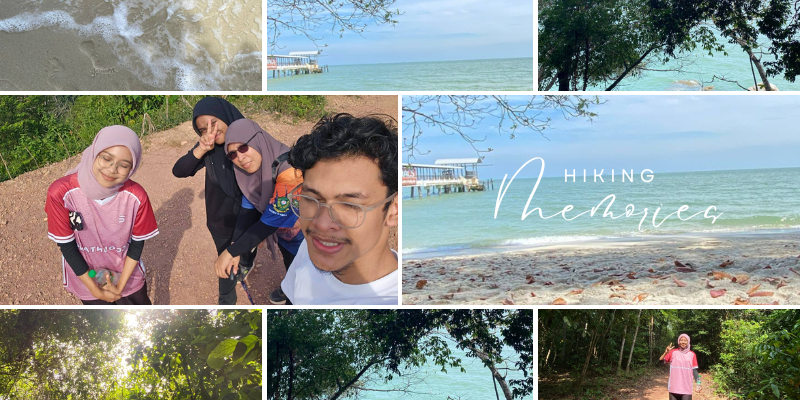
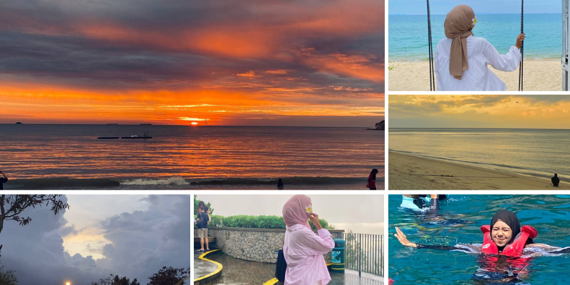

I love immersing myself in nature through hiking, capturing breathtaking photographs that tell stories of the world’s beauty, and exploring underwater wonders while snorkeling. These activities bring me joy, inspire creativity, and fuel my sense of adventure, allowing me to connect deeply with the natural world around me.
 
Music has always been a source of inspiration and comfort for me, and these three songs hold a special place in my heart. "Reminisensi" by Insomniacks resonates deeply with its nostalgic and dreamy vibes, evoking memories and emotions that feel both personal and universal.
"Rahsia Tuhan" by Noh Salleh, with its soulful melody and poetic lyrics, is a beautiful reflection on life’s mysteries and the divine secrets that shape our paths.
"Masing-Masing" by Erni Zakri captures the essence of individuality and self-expression, celebrating the beauty of staying true to oneself. Together, these songs create a soundtrack that uplifts, inspires, and connects me to the deeper facets of life.
I love exploring new places, whether it's traveling with friends or family, as each trip creates cherished memories and deepens our bonds. Along the way, food hunting adds an exciting twist to the journey, allowing me to savor diverse flavors and discover culinary gems. These adventures are my perfect blend of connection, exploration, and joy.